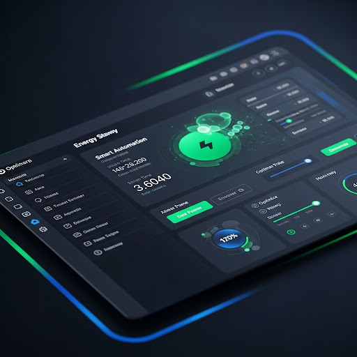

4.2. Software eficiente energéticamente
El software influye de manera directa sobre el consumo energético de los dispositivos en los que se ejecuta. Un desarrollo orientado a la eficiencia energética considera:
- Optimización de algoritmos y estructuras de datos: Seleccionar algoritmos de menor complejidad y estructuras que minimicen accesos a memoria, reduciendo ciclos de CPU.
- Gestión eficiente de los recursos: Liberar memoria y cierres de hilos o procesos cuando dejan de ser necesarios; evitar bucles innecesarios o polling constante.
- Escalado dinámico de potencia del hardware: Utilizar mecanismos de ahorro del sistema operativo, como APUs para bajar la frecuencia de CPU/GPU cuando la carga es baja.
- Reducción de llamadas a red: Agregar caché local y agrupar transacciones para minimizar el uso de interfaces de red, pues son grandes consumidores de energía.
- Interfaces de usuario eficientes: Limitar animaciones y refrescos de pantalla innecesarios; optar por modos oscuros que reducen el consumo en pantallas OLED.
- Monitorización y métricas de consumo: Integrar herramientas de profiling energético (p. ej., Intel VTune, perf) y evaluar el consumo en distintas etapas.
La implementación de estas prácticas no solo prolonga la autonomía en dispositivos móviles, sino que en entornos de servidores reduce significativamente la factura energética y las emisiones de CO₂.
